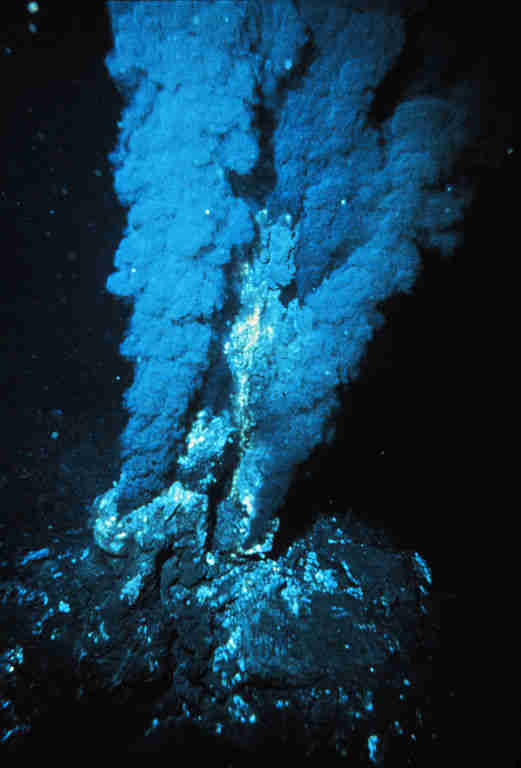

 Schwarze Raucher im mittelozeanischen Rücken: entdeckt 1977, bis 464 °C heiss.
Enthält
Überkritisches Wasser
und scheidet Mineralien aus: Kupfer, Eisen, Zink, Schwefel.
Vgl Eiszeit!
Hi 38:16a
Bist du gekommen bis zu den Quellen des Meeres … ?